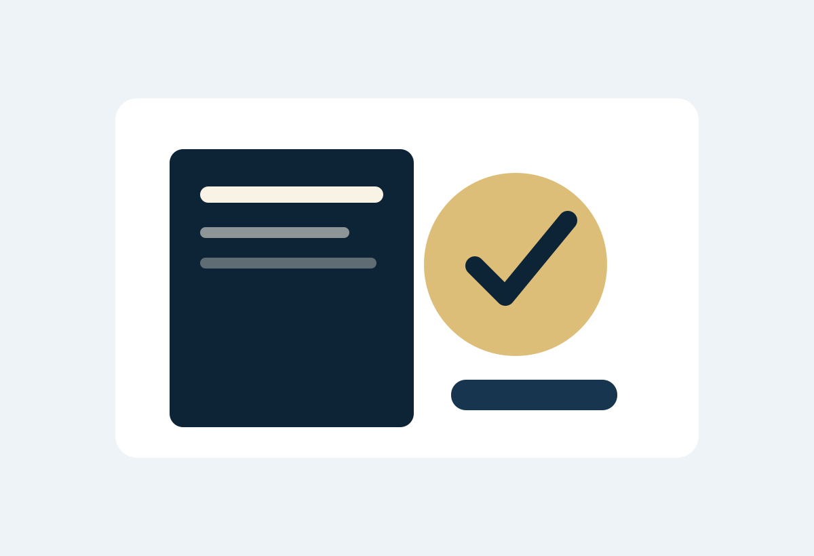
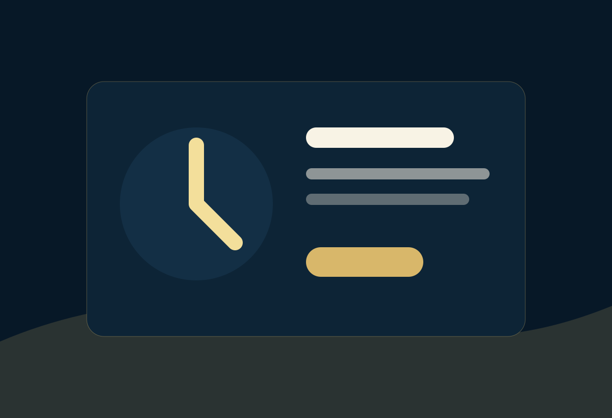

Qué hacer si me citan a la Fiscalía en Colombia
Guía práctica sobre qué hacer si recibió una citación de Fiscalía: cómo prepararse, qué revisar y cuándo contactar a un abogado penalista.
Leer artículo →Contenido pensado para captar búsquedas informativas y convertir lectores en consultas cuando existe una situación penal activa.

Guía práctica sobre qué hacer si recibió una citación de Fiscalía: cómo prepararse, qué revisar y cuándo contactar a un abogado penalista.
Leer artículo →
Pasos iniciales cuando capturan a un familiar: ubicación, derechos, audiencia de legalización y asesoría penal urgente.
Leer artículo →
Situaciones en las que conviene consultar a un abogado penalista: denuncias, citaciones, capturas, audiencias e investigaciones.
Leer artículo →Explicación general sobre la audiencia de imputación de cargos y por qué requiere preparación con abogado penalista.
Leer artículo →Qué significa una medida de aseguramiento, por qué puede afectar la libertad y cómo prepararse para esta audiencia.
Leer artículo →Cómo estructurar una denuncia penal: hechos, pruebas, cronología, personas involucradas y seguimiento del proceso.
Leer artículo →Orientación inicial si fue denunciado por estafa: documentos, comunicaciones, pagos, contratos y estrategia de defensa.
Leer artículo →Qué hacer ante una denuncia por violencia intrafamiliar: medidas de protección, pruebas, comunicación y defensa penal.
Leer artículo →Derechos básicos de una persona capturada y por qué es importante contar con asesoría penal desde el inicio.
Leer artículo →Errores frecuentes en casos penales: declarar sin asesoría, borrar pruebas, ignorar citaciones o actuar impulsivamente.
Leer artículo →Reciba orientación confidencial y defina los próximos pasos antes de que el caso avance sin estrategia.